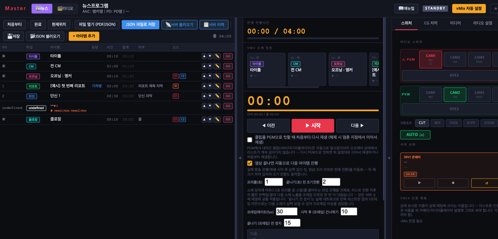
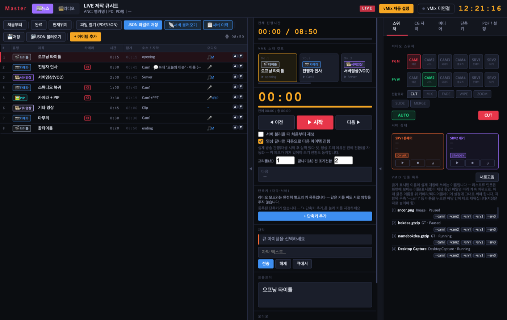
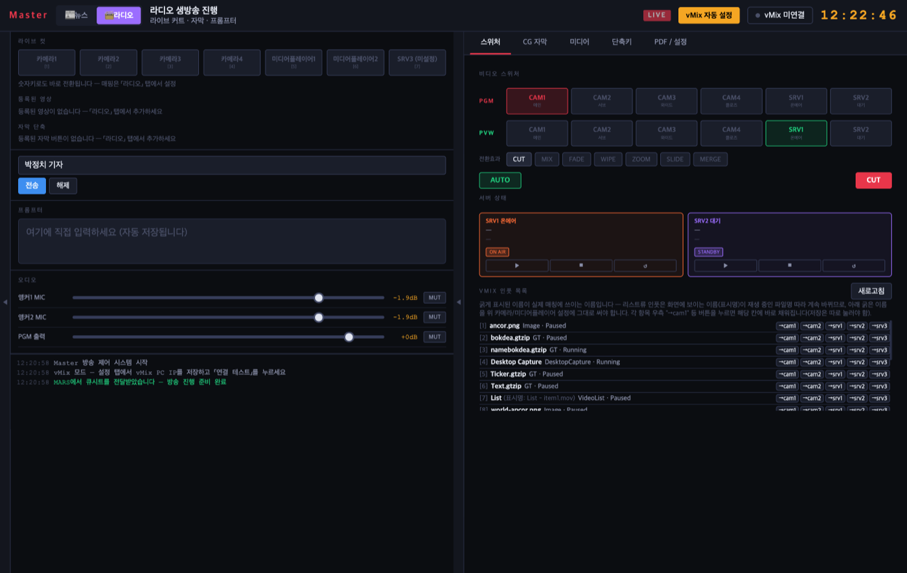
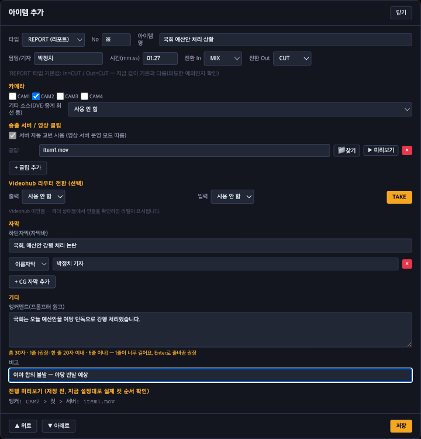

MARS에서 만든 큐시트를 불러와 실제 방송을 진행하는 화면입니다. 아래는 모두 실제 운영 화면을 그대로 캡처한 이미지이며, 이 페이지 자체는 vMix·서버에 연결되어 있지 않아 클릭해도 반응하지 않습니다. 이미지를 클릭하면 크게 볼 수 있습니다.

좌측엔 큐시트, 가운데엔 지금 온에어 중인 소재와 진행 타이머, 우측엔 실시간 스위처와 서버영상 상태가 함께 보입니다. 진행자는 이 화면 하나로 큐시트 진행부터 전환·자막·서버영상까지 전부 제어합니다.

우측 스위처에서 PGM/PVW 소스를 직접 골라 CUT·MIX·FADE 등으로 전환합니다. 서버(SRV) 상태 패널은 지금 온에어 중인 클립과 대기 중인 다음 클립을 함께 보여줘, 다음 소재가 준비됐는지 한눈에 확인할 수 있습니다.

같은 앱 안에서 모드만 전환하면 라디오 전용 레이아웃이 됩니다 — 카메라 프리셋, 자막 단축키, 오디오 페이더가 뉴스 모드와 별도로 구성되어 서로 영향을 주지 않습니다.

큐시트의 아이템을 열면 카메라/서버 소스, 전환효과(In/Out), 자막 타이밍까지 이 창 하나에서 조정합니다. 방송 중에도 다음 아이템을 미리 열어 준비할 수 있습니다.